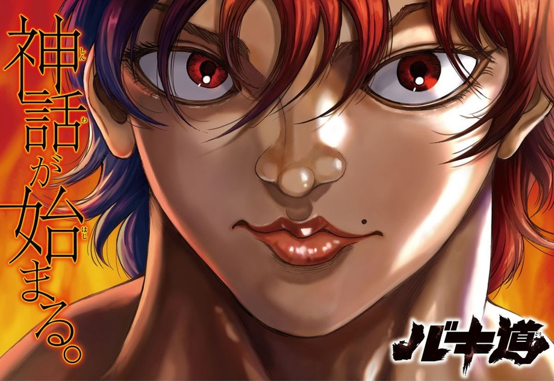
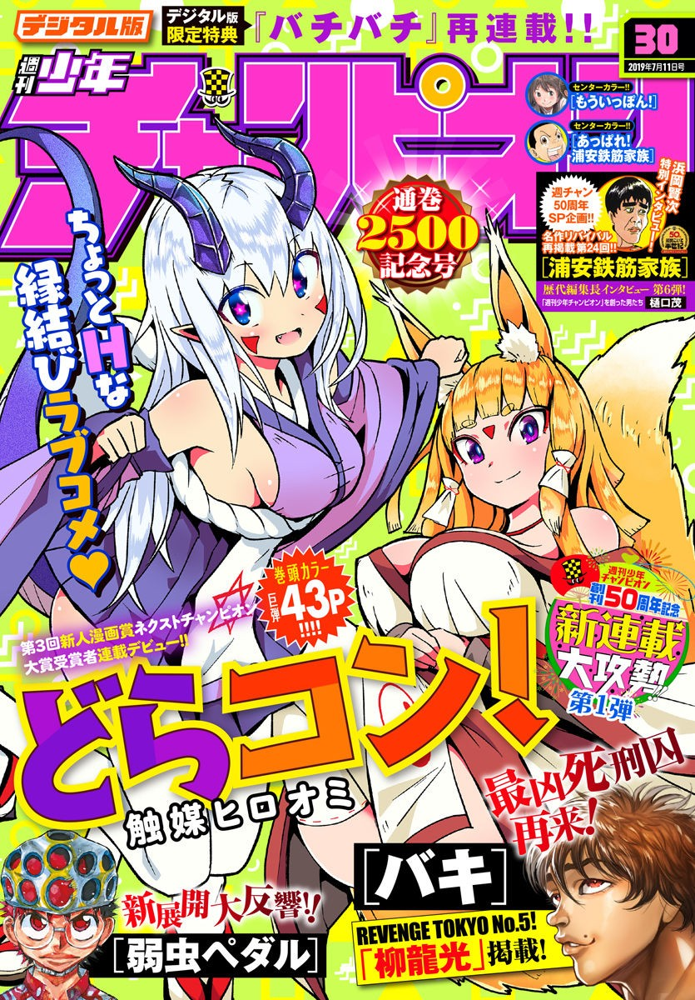
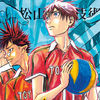

Los puestos y comentarios de los autores de la Weekly Shonen Champion de esta semana.

Yowamushi Pedal

"Magimoji Rurumo", mi serie publicada en la Monthly Shonen Sirius ha acabado despues de 12 años. Tuvo una pagina a color final y una entrevista, espero que le echeis un vistazo.
BEASTARS

Uno de mis editores mas jovenes a logrado entrar en Akita Shoten, me estoy haciendo mayor.
Atsumare! Fushigi Kenkyuubu
Intenté hacer planchas hace poco, pero hacerlas incluso por solo 1 minuto es dificil, me falta fuerza física...
Yuuenchi Baki Gaiden

Fue a USA a principios de junio. Pude ver un partido de la primera semana de la Major League Baseball y un home-run de Shohei Otani, jugador de Los Ángeles.
Appare! Urayasu Tekkin Kazoku

Las apariciones y comentarios del maestro de Yanagi, Kunimatsu, es lo que me pone la piel de gallina y hace que algunos capítulos sean lo mejor de Baki.
'Ippon' Again

Estoy esperando con muchas ganas "Toy Story 4".
Rokudo no Onnatachi

Las tiendas de conveniencias son geniales, incluso si el tamaño de la tienda es igual, la cantidad de cosas que puedes comprar es cada ve mayor.
Mairimashita! Iruma-kun

He ido al dentista despues de mucho tiempo. Me hicieron una radiografía mientras ponían música de Beethoven de fondo. ¡¿Por que?!
Ashigei Shoujo Komura-san

Hoshino Gen irá al programa de TV "Bugari tochû gesha no tabi"! Me acabo de acordar de que es el hermano mayor de Yokoyama Daisuke.
Worst Gaiden Guriko

"Berlin is sunny" es la mejor novela de misterio que he leído en los últimos años! Fue súper divertida!
Boryaku no Panzer

Estoy trabajando mientras escucho videos de leyendas urbanas y casos sin resolver, son muy interesantes.
The Vampire Dies in No Time

Despues de 28 años de vida, puedo decir que el azúcar esta bueno, el shokupan también esta bien.
Harigane Service Ace

La peliculas "Children of the sea” es definitivamente una de mis favoritas. Puede tener varias interpretaciones dependiendo de la persona.
Rororro!

La mejor manera de comer es con aceite de anguila resh.
Magical Girl Site
Parece ser que a las estudiantes les gustan las bebidas de Tapioca.
Sachio-kun
Me levanto a las 8 todas las mañanas y comienzo a trabajar en el manuscrito! Despues como, escribo, como arroz, me baño y me voy a dormir.
Junior
Por que han quitado a Minori Suzuki del G1?
0

Muchas gracias.
Himawari

Gracias a todas las personas que han colaborado con "Himawari" No voy a perder el tiempo con comentarios, nos vemos.
Furutto on Thursday
Por fin he podido tocar el Mukkuri. Es muy vergonzoso traer un instrumento y no saber como tocarlo.
Dorakon!
Shokubai Hiroomi
Encantado de conoceros! Estoy tratando de hacer una comedia romántica que la gente pueda disfrutar, espero que os divirtais con la serializacion!